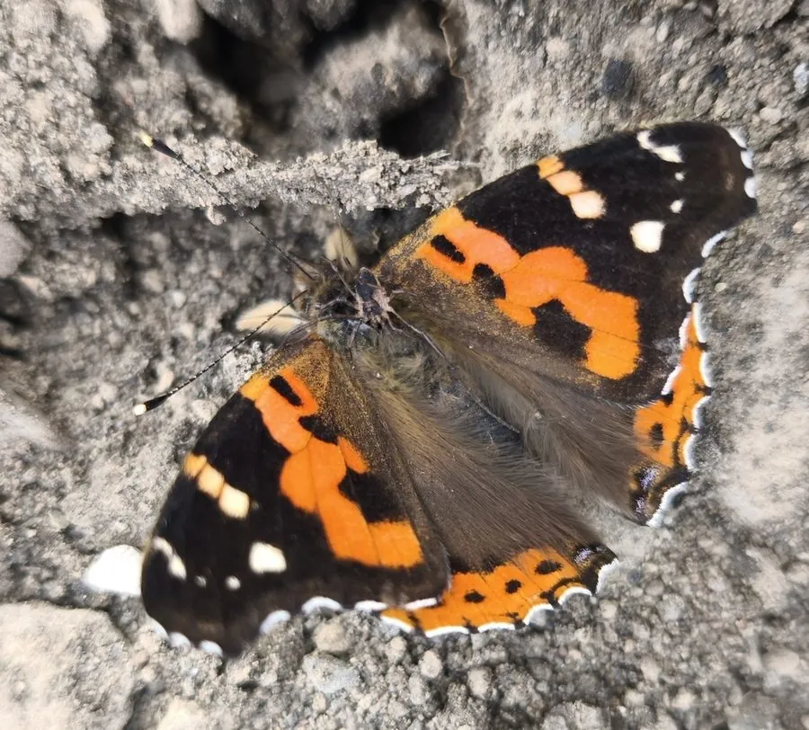

昆虫 · 动物界
大红蛱蝶 Vanessa indica

翅面黑褐带橙红斑的常见大型蛱蝶，幼虫取食苎麻等荨麻科植物，亚洲广布，常在城市花园和公园中访花。
- 分类
- 门节肢动物门纲昆虫纲目鳞翅目科蛱蝶科属红蛱蝶属
- 栖息环境
- 城市花园、公园、林缘与荒地，寄主植物附近
- 地理分布
- 中国大部分地区，以及日本、朝鲜半岛、印度和东南亚
- 保护级别
- 暂无评估
物种志
大红蛱蝶翅展约 6–7 cm，翅面黑褐色，前翅中部有一块不规则的橙红色大斑，顶角附近有几个小白斑，后翅外缘有橙红色宽带，翅反面有复杂的褐色云纹，停歇时翅面合拢，与树皮颜色相近。
成虫飞行迅速，喜欢访花吸蜜，也常吸食树液和腐果，在城市花园和公园中比较容易见到。雌蝶把卵产在苎麻、荨麻等荨麻科植物叶片上，幼虫取食叶片，身体带刺毛。大红蛱蝶一年发生多代，以成虫越冬，分布在中国大部分地区以及日本、朝鲜半岛、印度和东南亚。它是城市绿地中常见的蝴蝶之一，对环境的适应能力强，在人类活动较多的区域也能完成生活史，成虫越冬时多藏在树洞和落叶层中。
形态与习性
- 食性幼虫取食苎麻、荨麻等荨麻科植物；成虫吸蜜
- 翅展约 6–7 cm
- 生活史一年发生多代，以成虫越冬
- 习性成虫飞行迅速，喜访花和吸食树液
- 适应性能在城市绿地和花园中完成生活史
- 分布亚洲东部和南部广布
趣味知识
- 大红蛱蝶翅面上的橙红斑块，是它区别于其他蛱蝶的明显特征。
- 它常在公园花坛访花，是城市里比较容易观察到的蝴蝶。
- 大红蛱蝶的幼虫以苎麻为食，在苎麻丛附近常能发现。